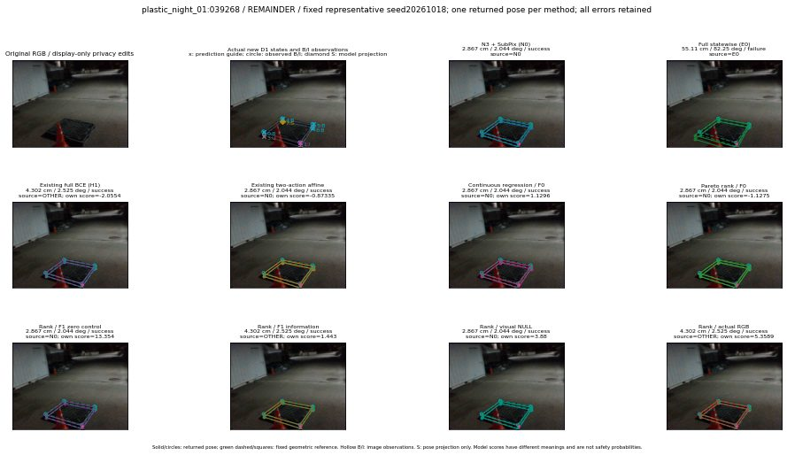

실선은 반환 자세, 초록 점선은 고정 기하 참조입니다. S는 영상 관측이 아닙니다. 점수는 모델별 의미가 다르며 보정된 안전 확률이 아닙니다. 개인정보 처리는 표시 사본에만 적용했습니다.
| 방법·seed | 위치 / 회전 / 공동성공 | 실제 출처 | 선택 후보 | 각 모델 자체 점수 |
|---|---|---|---|---|
| N0 | 2.867 cm / 2.044 deg / success | N0 | N/A | N/A |
| E0 | 55.11 cm / 82.25 deg / failure | E0 | N/A | N/A |
| E0_REGENERATED | 55.11 cm / 82.25 deg / failure | E0 | E0_REGENERATED | N/A |
| POSEFIX_SUBPIX_PF_ANCHOR | 3.209 cm / 2.119 deg / success | OTHER | N/A | N/A |
| POSEFIX_SUBPIX_YOLO_ANCHOR | 3.209 cm / 2.119 deg / success | OTHER | N/A | N/A |
| D1_H1_MLP_s20261018 | 4.302 cm / 2.525 deg / success | OTHER | G10/ORIGINAL_WD/selected | -2.0554051399230957 |
| D1_H1_MLP_s20261019 | 4.302 cm / 2.525 deg / success | OTHER | G10/ORIGINAL_WD/selected | -2.192187547683716 |
| D1_H1_MLP_s20261020 | 4.302 cm / 2.525 deg / success | OTHER | G10/ORIGINAL_WD/selected | -2.4207780361175537 |
| D1_H1_PAIR_MLP_s20261018 | 2.867 cm / 2.044 deg / success | N0 | N0 | -2.0092148780822754 |
| D1_H1_PAIR_MLP_s20261019 | 2.867 cm / 2.044 deg / success | N0 | N0 | -2.059216260910034 |
| D1_H1_PAIR_MLP_s20261020 | 2.867 cm / 2.044 deg / success | N0 | N0 | -2.739800214767456 |
| D1_H1_PAIR_ROLE_AFFINE_s20261018 | 2.867 cm / 2.044 deg / success | N0 | N0 | -0.873350203037262 |
| D1_H1_PAIR_ROLE_AFFINE_s20261019 | 2.867 cm / 2.044 deg / success | N0 | N0 | -1.4096134901046753 |
| D1_H1_PAIR_ROLE_AFFINE_s20261020 | 2.867 cm / 2.044 deg / success | N0 | N0 | -0.8172515630722046 |
| R_CONT_F0_s20261018 | 2.867 cm / 2.044 deg / success | N0 | N0 | 1.129622459411621 |
| R_CONT_F0_s20261019 | 4.302 cm / 2.525 deg / success | OTHER | G10/ORIGINAL_WD/selected | 1.2208285331726074 |
| R_CONT_F0_s20261020 | 4.302 cm / 2.525 deg / success | OTHER | G10/ORIGINAL_WD/selected | 1.2241438627243042 |
| R_ORDER_F0_s20261018 | 2.867 cm / 2.044 deg / success | N0 | N0 | -1.1274609565734863 |
| R_ORDER_F0_s20261019 | 2.867 cm / 2.044 deg / success | N0 | N0 | 1.500508189201355 |
| R_ORDER_F0_s20261020 | 2.867 cm / 2.044 deg / success | N0 | N0 | 0.31340575218200684 |
| R_ORDER_F1_ZERO_s20261018 | 2.867 cm / 2.044 deg / success | N0 | N0 | 13.3538236618042 |
| R_ORDER_F1_ZERO_s20261019 | 4.302 cm / 2.525 deg / success | OTHER | G10/ORIGINAL_WD/selected | 3.0236034393310547 |
| R_ORDER_F1_ZERO_s20261020 | 2.867 cm / 2.044 deg / success | N0 | N0 | 6.434453010559082 |
| R_ORDER_F1_s20261018 | 4.302 cm / 2.525 deg / success | OTHER | G10/ORIGINAL_WD/selected | 1.4430434703826904 |
| R_ORDER_F1_s20261019 | 4.302 cm / 2.525 deg / success | OTHER | G10/ORIGINAL_WD/selected | 5.1689934730529785 |
| R_ORDER_F1_s20261020 | 4.302 cm / 2.525 deg / success | OTHER | G10/ORIGINAL_WD/selected | 1.8008736371994019 |
| V_ORDER_NULL_s20261018 | 2.867 cm / 2.044 deg / success | N0 | N0 | 3.879964590072632 |
| V_ORDER_NULL_s20261019 | 4.302 cm / 2.525 deg / success | OTHER | G10/ORIGINAL_WD/endpoint/5 | 0.9901027083396912 |
| V_ORDER_NULL_s20261020 | 4.302 cm / 2.525 deg / success | OTHER | G10/ORIGINAL_WD/selected | 4.3805766105651855 |
| V_ORDER_RGB_s20261018 | 4.302 cm / 2.525 deg / success | OTHER | G10/ORIGINAL_WD/selected | 5.358912467956543 |
| V_ORDER_RGB_s20261019 | 4.302 cm / 2.525 deg / success | OTHER | G10/ORIGINAL_WD/endpoint/5 | -0.10268007218837738 |
| V_ORDER_RGB_s20261020 | 4.302 cm / 2.525 deg / success | OTHER | G10/ORIGINAL_WD/selected | -8.043302536010742 |